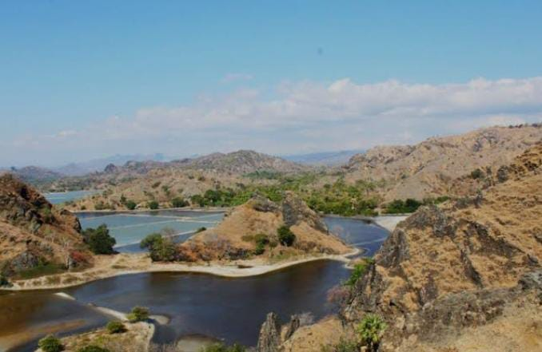
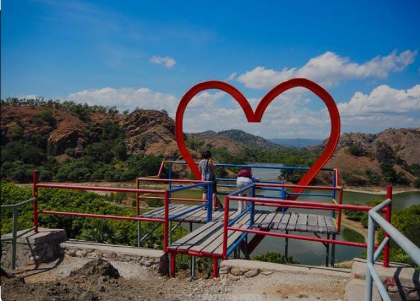
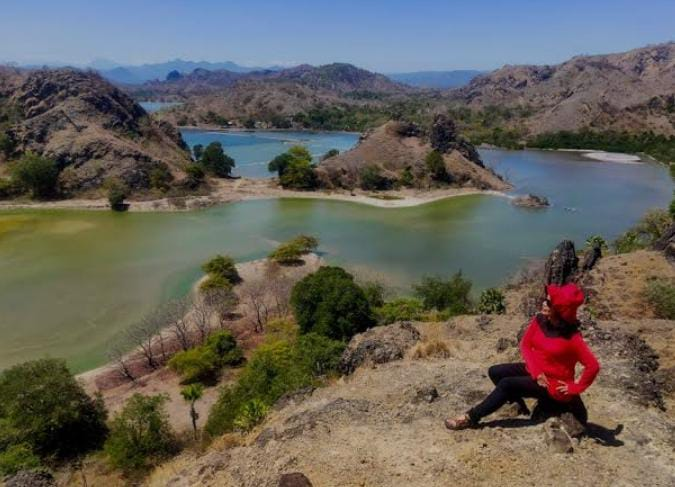

Profil Pengunjung
Bukit Tuamese menarik berbagai kalangan wisatawan, mulai dari lokal hingga mancanegara. Keindahan alamnya yang menyerupai Raja Ampat menjadikannya destinasi favorit bagi:
- Wisatawan Lokal: Warga sekitar sering datang untuk rekreasi keluarga dan bersantai.
- Wisatawan Domestik: Pengunjung dari berbagai daerah Indonesia menikmati panorama unik Bukit Tuamese.
- Wisatawan Mancanegara: Turis asing, terutama dari Timor Leste, juga tertarik menjelajahi keindahan alam di sini.
🎫 Tarif Parkir
Tidak ada tiket masuk untuk mengunjungi Bukit Tuamese. Namun, pengunjung dikenakan biaya parkir:
- Mobil: Rp 10.000
- Motor: Rp 5.000
Biaya ini digunakan untuk pemeliharaan dan pengelolaan area wisata oleh masyarakat setempat.
🕒 Jam Operasional
Bukit Tuamese buka setiap hari dari pukul 07.00 hingga 18.00 WITA. Waktu terbaik untuk berkunjung adalah sore hari, sekitar pukul 16.00, untuk menikmati panorama matahari terbenam yang memukau.
Sumber: travel.detik.com • batastimor.com